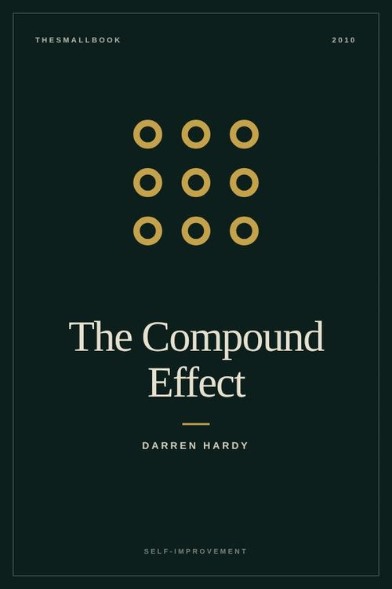

Library › Authors › Darren Hardy
Books by Darren Hardy
Darren Hardy has one book in the library. Every book here is read down to the big idea, the lessons, the lines worth keeping and the actions worth taking. Start with the summary, then buy the full book if it earns a place on your shelf.

The Compound Effect
2010 · 8 min · 6 lessons
The magic penny beats the $3 million check. Tiny daily choices, compounded, decide everything - and you're always compounding something.
Hardy - longtime publisher of SUCCESS magazine with a front-row seat to thousands of achievers - strips success to one formula: small, smart choices, consistently applied over time. The Compound Effect is always working, for you or against you: the daily muffin, the nightly hour of TV, the skipped workout all compound as surely as the invested dollar. The system: take radical responsibility and track your choices (awareness precedes change), harness habits by engineering your triggers, build unstoppable momentum...
Lessons in the summary
- The Magic Penny: Compounding Beats Talent
- Track Everything: Awareness Precedes Change
- Kill Bad Habits at the Trigger, Install Good Ones With Why-Power
- Big Mo: Routines, Rhythm, and Consistency
- Guard Your Inputs, Then Multiply: The Extra Rep
- The Compound Effect of Relationships: Your Network Is Your Net Worth
Lines worth keeping
- Small, smart choices + consistency + time = radical difference.
- You will never change your life until you change something you do daily.
- It's not the big things that add up in the end; it's the hundreds, thousands, or millions of little things that separate the ordinary from the extraordinary.
Questions Darren Hardy helps answer
Read nearby authors next
- Amish Tripathi 6 books
- Robin Sharma 5 books
- A.P.J. Abdul Kalam 4 books
- Adam Grant 4 books
- Cal Newport 4 books
- Chetan Bhagat 4 books
- Jonathan Haidt 3 books
- Ryan Holiday 3 books